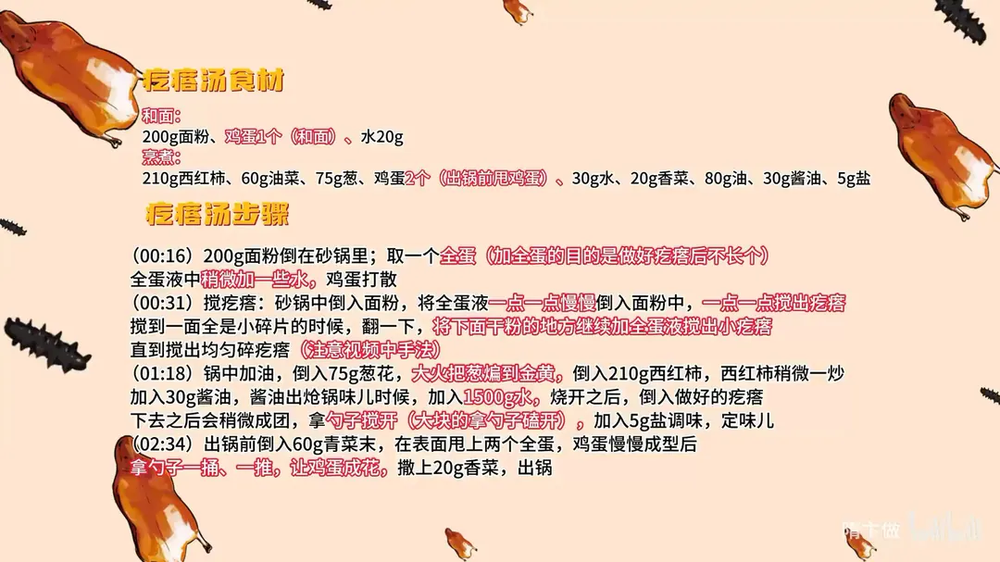

疙瘩汤
隋卞一做。只需盐调味就很鲜。和面时全蛋打散是做好疙瘩的关键。
原视频：https://www.bilibili.com/video/BV1PUxFehEXe
食材
面粉、鸡蛋、水 等 12 样
| 类别 | 用料 | 用量 |
|---|---|---|
| 和面 | 面粉 | 200g |
| 和面 | 鸡蛋 | 1 个 |
| 和面 | 水 | 20g |
| 煮制 | 西红柿 | 210g |
| 煮制 | 油 | 60g |
| 煮制 | 葱 | 75g |
| 煮制 | 鸡蛋 | 2 个（出锅前甩鸡蛋） |
| 煮制 | 水 | 30g |
| 煮制 | 香菜 | 20g |
| 煮制 | 油 | 80g |
| 煮制 | 酱油 | 30g |
| 煮制 | 盐 | 5g |
步骤
- 打蛋液：200g 面粉倒在砂锅里；取一个全蛋（加全蛋的目的是做好疙瘩后不长个），全蛋液中稍微加一些水，鸡蛋打散。
- 搅疙瘩：砂锅中倒入面粉，将全蛋液一点一点慢慢倒入面粉中，一边倒一边搅出疙瘩，搅到一面全是小碎片的时侯翻一下，将下面干粉的地方继续加全蛋液搅出小疙瘩，直到搅出均匀碎疙瘩。
- 炒底：锅中加油，倒入 75g 葱花，大火把葱煸到金黄；倒入 210g 西红柿，西红柿稍微炒一下加 30g 酱油，酱油出炝锅味儿时加入 1500g 水。
- 下疙瘩：烧开之后倒入做好的疙瘩，下去之后会稍微成团，拿勺子搅开，大块的拿勺子搪开。
- 调味：加入 5g 盐调味定味儿。
- 甩蛋：出锅前倒入 60g 青菜末，在表面甩上两个全蛋，鸡蛋慢慢成型后拿勺子一搪一推，让鸡蛋成花；撒上 20g 香菜出锅。
小贴士
- 和面用全蛋液代替水，疙瘩更香且煮后不膨胀发硬。
- 疙瘩下锅后马上搅开，否则会粘成一团。
讲解要点
难度：★☆☆☆☆（唯一的手艺是搅疙瘩，别急、少量多次就行）
为什么这么做
- 和面只用全蛋液、不加水：蛋液里的蛋白把面粉颗粒裹住，煮完疙瘩不「长个儿」，汤也不澥；只用清水和面，放一会儿就发稠、疙瘩涨硬。
- 蛋液一点一点倒、边倒边搅：一次倒多了立刻结成大面团；只有慢慢滚，才能滚出均匀的小碎疙瘩。
- 葱要多、要煸到金黄：葱香是这锅汤的底味，煸不透只剩生葱气；切丁比切丝耐煸，出香更足。
- 酱油在西红柿之后、加水之前放：酱油遇高温锅壁才出炝锅的香气，先加水就只剩咸味。
- 疙瘩下锅立刻搅开：疙瘩表面还带黏性，晚一步就粘成一坨；大块的用勺子磕散，不用手撕。
- 蛋花最后甩、先定型再推：蛋液下去等它成型，再一捅一推才成片；早搅就成蛋絮。这一勺蛋是给汤增鲜、让口感变浑厚的，不是单纯为了好看。
容易翻车
- 蛋液一次倒太多，滚出拳头大的面块，里面还是干粉。
- 水添多了，疙瘩汤变稀汤；水少了又会坨成糊。
- 甩蛋时火太大或者马上下勺推，蛋花碎成渣。
- 西红柿没炒出汁就加水，汤不红、鲜味也薄。
热评补充
- 有网友提到饭店版疙瘩汤里会加虾仁，鲜味明显更足；家里有虾仁可以下几只，和西红柿的酸很搭。
原片尾卡

原片文案
AI 字幕校准稿
这几乎是我人生中喝过最好喝的疙瘩汤了，一做一个不吱声。从我们这号开始到现在，疙瘩汤应该是私心最多的那几个菜之一了。
取一个鸡蛋，一个全蛋，全蛋液里加点水，全部打散。这为什么要打全蛋呢？鸡蛋打完，这个疙瘩煮完之后它不长个儿。有的时候我们在家做完，放那稍微一会儿、一等，刚才刚做的时候特别好、合适，稍微一等就稠了。
倒一点就搅一点，边搅边倒。我的手没有那么灵活，一点点来，你别着急就行了。你看这么一拉，还会有点干粉，咱们再少量地加点。这样就可以了，砂锅里边全都是小面疙瘩。想吃大一点疙瘩的，你就再加点蛋液，面疙瘩它就越滚越大。
完活了。做疙瘩汤有那么几个步骤：炝锅、煮、调味，还有最后那个步骤，很关键。最后那步骤之前，我让你尝一下这个汤；最后步骤之后，我让你再尝一尝，它俩不一样。
里边加油，把葱花煸一下。这个葱也一定要多，要煸香，大火把这葱煸黄，这跟炝锅面是异曲同工。但是炝锅面切的是葱丝，这个咱们用的是丁儿。看，都黄了，全都变成金黄色了。
这时候我们把西红柿倒进去，西红柿稍微一炒，加酱油，酱油呢出炝锅的味，这会儿咱们加水——加开水就行。为了给大家伙做得快一点，我就加点热的。
烧开之后，咱们把这搅好的疙瘩倒进去。你们看现在疙瘩的状态还是一粒一粒的，这样就没有问题了。放下去之后拿勺子赶紧给它搅开，大块的拿勺子磕一下，这个稀稠程度就没问题。
咱加盐调下味——这个也是只放盐。我给你盛出一点，一会儿我要做最后一个步骤了。现在喝的就挺好喝的了。这会儿我们把青菜倒进去，青菜先倒进去，然后是甩鸡蛋，两个全蛋。
鸡蛋放进去之后别着急，先让它成型一下，然后一捅一推，鸡蛋已成花了。爱吃香菜的现在也可以放了。好了，这就可以出锅了。
是不是不一样？真不一样。刚才那个吃的是葱香味，特别的香、特别的足；加完这个鸡蛋以后，它变得浑厚了，变得更鲜了。最后这步骤，你们可能觉得，哎呀要甩个蛋花，其实真的不是——不同的时候甩鸡蛋会出现不同的效果，最后甩鸡蛋就是为了给这个疙瘩汤增鲜。只放了盐，特别特别的好吃。